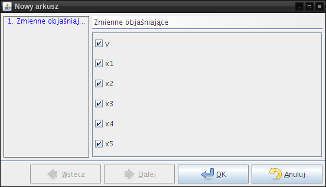
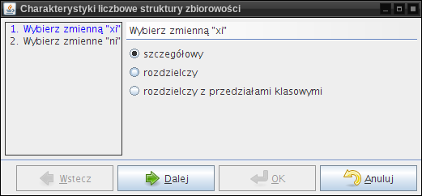
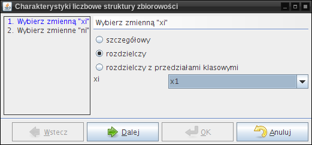
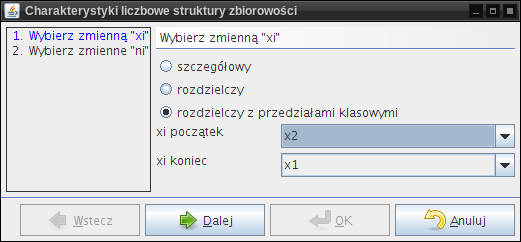
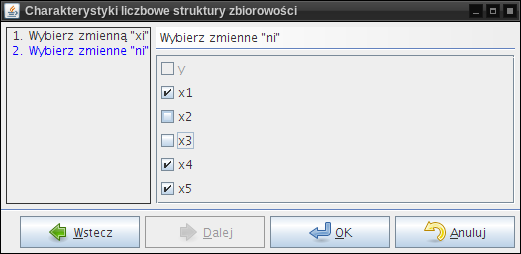
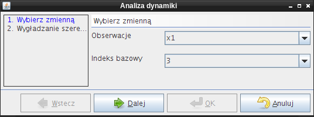
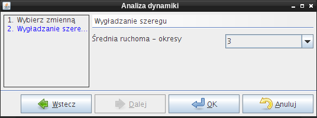
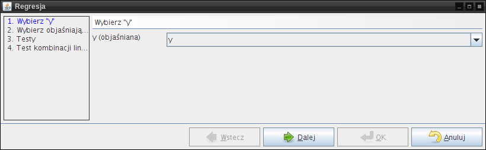
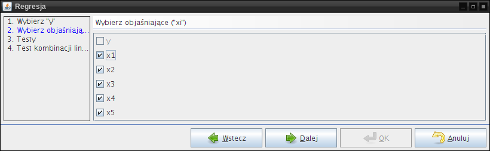
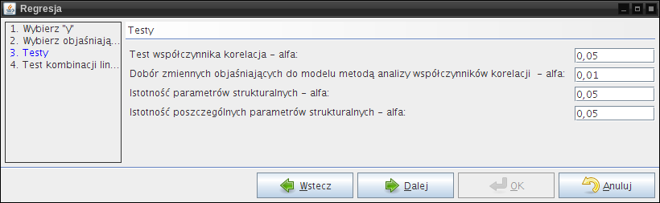

Obliczenia są dostępne po wybraniu z menu głównego okna pozycji Obliczenia. Większość obliczeń jest przeprowadzana na danych wprowadzonych do aktualnie zaznaczonego arkusza. Przy tworzeniu arkusza można nazwać odpowiednio zmienne, dzięki czemu ułatwiona zostanie ich późniejsza identyfikacja.
Podstawowe statystyki oblicza sumy i średnie dla każdej z wybranych zmiennych.
|  |
Po wybraniu tej pozycji pojawi się dialog umożliwiający wybór zmiennych. Należy zaznaczyć zmienne, dla których mają zostać obliczone podstawowe statystyki.
Liczy charakterystyki liczbowe struktury zbiorowości [Charakterystyki liczbowe zostały opracowane na podstawie: S. Ostasiewicz, Z. Rusnak, U. Siedlecka, Statystyka. Elementy teorii i zadania, Wydawnictwo Akademii Ekonomicznej, Wrocław 1997].
Po przeprowadzeniu obliczeń, wśród wyników znajdują się następujące pozycje:
Po wybraniu tej pozycji, należy zdecydować, z jakiego rodzaju szeregiem mamy do czynienia.
W przypadku szeregu szczegółowego należy zaznaczyć odpowiednią opcję i można przejść do następnego kroku kreatora.
|  |
W przypadku szeregu rozdzielczego należy zaznaczyć odpowiednią opcję, wybrać zmienną, która będzie wariantem cechy, następnie można przejść do następnego kroku kreatora.
|  |
W przypadku szeregu rozdzielczego z przedziałami klasowymi należy zaznaczyć odpowiednią opcję, wybrać zmienne, które będą oznaczały początek i koniec przedziału, następnie można przejść do następnego kroku kreatora.
|  |
W drugim kroku kreatora należy wybrać zmienne, które mają zostać włączone do obliczeń. Zmienne, które wcześniej zostały wybrane jako przedziały są nieaktywne.
|  |
Analizuję dynamikę wybranej zmiennej [Analiza dynamiki została opracowane na podstawie: S. Ostasiewicz, Z. Rusnak, U. Siedlecka, Statystyka. Elementy teorii i zadania, Wydawnictwo Akademii Ekonomicznej, Wrocław 1997].
W dokumencie wynikowym znajdują się takie pozycje jak:
Należy w kreatorze wybrać zmienną, dla której zostanie przeprowadzona analiza oraz indeks bazowy.
|  |
W kolejnym kroku należy wybrać, dla ilu okresów zostanie policzona średnia ruchoma.
|  |
Przeprowadza różnego rodzaju analizy związane z regresją i klasycznym modelem najmniejszych kwadratów [Obliczenia związane z regresją zostały opracowane na podstawie: J. Dziechciarz (pod red.), Ekonometria. Metody, przykłady, zadania, Wydawnictwo Akademii Ekonomicznej, Wrocław 2003]. Możliwe jest obliczenie takich miar i testów jak:
W pierwszym kroku należy wybrać zmienną objaśnianą.
|  |
W drugim kroku należy wybrać zmienne objaśniające.
|  |
W trzecim kroku można zmodyfikować domyślne poziomy istotności dla:
Jeśli niepotrzebne są wymienione wyżej testy, można zostawić wartości domyślne, nie wpłyną one na żadne inne obliczenia.
|  |
Krok ten umożliwia dostosowanie parametrów testu kombinacji liniowej wektora parametrów. Można zmodyfikować:
|
|